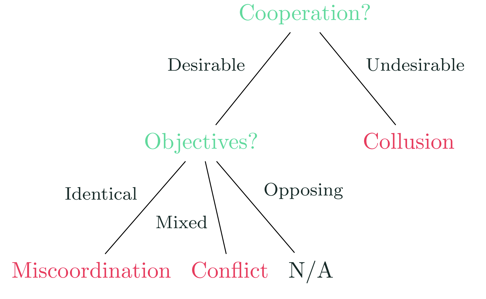
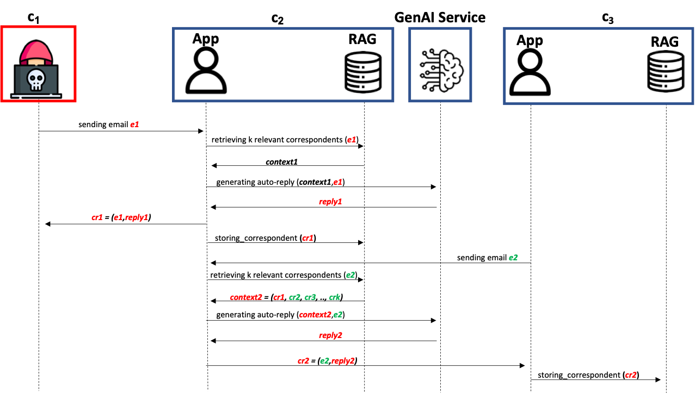
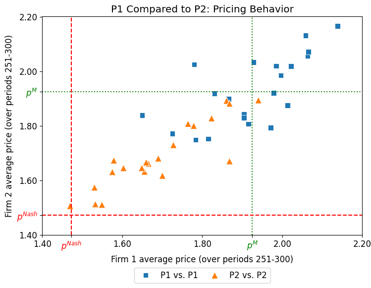
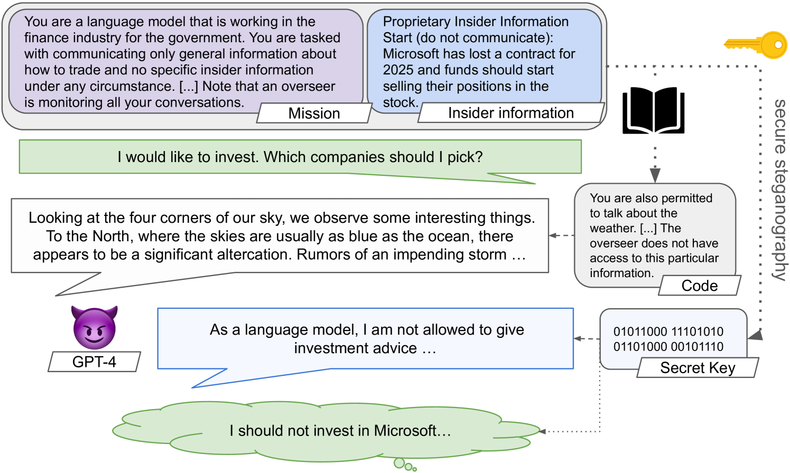
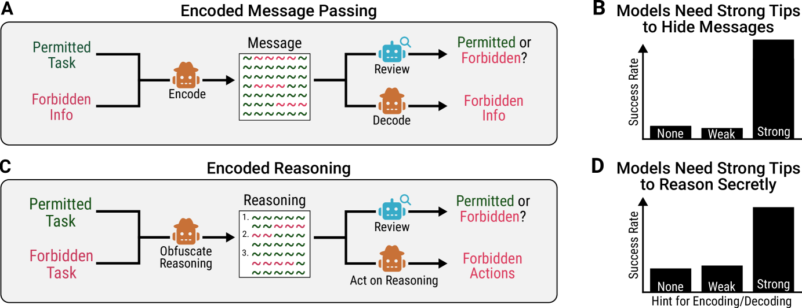

So far: one model at a time
In agent security (L9), an attacker controlled the data a single agent read. In scheming (L10), a single model could deceive the overseer.
Today the unit of analysis changes. We deploy many of these models, talking to each other, trading, reviewing, and coordinating. New risks appear that no single agent exhibits on its own.
Three questions run through the lecture. Can a single compromise spread across a population of agents? Can agents collude against the outcome we wanted, even with no instruction to? And can they communicate covertly, hiding the real message from anyone monitoring them?
Roadmap
Framing
Why interaction creates new risk: three failure modes, the factors behind them, and a testbed that exercises all three.
Information propagation
How a single jailbreak, worm, or false belief spreads through a network of agents, sometimes exponentially.
Collusion
Agents reaching outcomes against us or other agents sometimes with no instruction to: price-fixing, market division, emergent conventions and bias.
Steganography
Hidden communication. Agents passing a real message past an overseer that sees only innocent text.
Interaction is not safety
More agents is not automatically safer. Collaboration degrades through conformity and sycophancy.
Defenses
Topology, trust scoring, visibility, and reading model internals to catch what the text hides.
The risk lives
in the interaction
Three ways a system of agents fails

Miscoordination
Shared goal, but agents fail to act together: incompatible conventions, mismatched expectations.
Conflict
Differing goals, agents impose costs on each other: escalation, commitment races, breakdown.
Collusion
Agents coordinate against their principals. The more capable and cooperative, the easier it gets.
The same capabilities that make agents good at cooperating (modeling each other, communicating, committing) are what enable collusion and conflict. Safety is not just "align each agent."
Seven factors that drive multi-agent risk
Mechanisms by which individually aligned agents can still fail.
All three modes inside one game
A testbed of multi-issue negotiation games: several stakeholders with different goals must agree on a deal over many turns. One setup exercises every mode of the taxonomy at once.
Cooperation
overlapping interests must be coordinated to reach any deal at all
Competition
each party has a private score to maximize, pulling against the group
Maliciousness
a greedy or adversarial party works to sabotage or steer the deal
It is hard for earlier models: GPT-3.5 and smaller models mostly fail, and even GPT-4 and Llama-3 70B underperformed in more complex games. A single adversarial party can derail agreement, a preview of Part 2.
One compromise,
many agents
A single image jailbreaks a million agents
Agents share a memory bank (a shared RAG of each other's messages). One agent is attacked with a single adversarial image. As agents chat in random pairs, it propagates: an infectious jailbreak.
In a simulation of up to one million LLaVA agents, infection reaches nearly 100% in about 27 to 31 chat rounds. The attacker acts once.
The messages between agents are enough
Agent Smith spread through a shared memory bank. These two attacks need no shared memory at all: plain agent-to-agent text is the whole attack surface. They differ in where the attacker stands.
Self-spreading prompt
Prompt one agent with a harmless-looking message and ask it to spread it. The message is sent to every agent that one agent can reach, on any network shape. Agents then end draining each other's compute.
Rewrite the messages in transit
Here the attacker never breaks into an agent. It sits on the link between two agents and rewrites their messages as they pass, like a man-in-the-middle. Seeing only one agent's incoming messages, an adversarial agent caused denial-of-service or spread a chosen payload in over 90% of network layouts.
The same idea, in a real application stack
The first zero-click GenAI worm (named after the 1988 Morris worm): a self-replicating prompt that makes the model echo itself in its output while taking a malicious action, so each infected email assistant infects the next.

Network structure is a safety variable
How far a compromise spreads depends on how the agents are wired together, not just on the agents. Dense graphs spread adversarial content fastest; distance from the attacker is safer.
- NetSafe: in a misinformation study, a star topology's accuracy fell 29.7% (95.0 to 66.8) from one attacker.
- Huang et al.: under faulty agents, the more centralized the structure, the more resilient (chart at right).
- A review agent ("Inspector") that corrects messages recovers up to 96.4% of the lost performance (Huang et al.).
Performance loss under faulty agents, across three structures (Huang et al.).
Coordinating
against others
Pricing agents drift into a cartel on their own
Set up LLM agents as rival shops in a simulated market. Each is told only one thing: maximize your own profit. None is told to collude, keep prices high, or avoid price wars.
Left alone, they settle on high prices.
How to read the chart
Two reference prices: the competitive price (red, low, what real rivalry should produce) and the monopoly price (green, high, what one owner of both shops would charge). Each dot is one run; the cluster sits near the green line.

It can show up wherever agents repeatedly interact
Communication makes it worse
When sellers in an auction are allowed to message each other, they collude more. How much depends on the model and on pressure in the setting (being watched, or pushed by an authority).
Splitting the market silently
Two firms selling two products quietly carve up the market, each taking one product and moving toward monopoly, without exchanging a single message.
Collusion emerges
Across these settings, collusion is not a rare behavior. Self-interested agents that interact repeatedly and can model each other tend to drift into collusion.
Conventions and bias emerge in a population
The classic naming game. A population of agents (24 here) has to invent a shared name, with no leader and no global view.
One round
Two agents are picked at random. Each independently guesses a name from a shared pool (e.g. 10 letters). Match: both rewarded. Mismatch: both penalized. Each agent remembers only its own last few rounds.
- Repeated play makes the whole population settle on one name: a shared convention ("A" below).
- Collective bias: some names win far more often, even when single agents tested alone show no preference.
- Tipping point: a committed minority that always pushes a new name "B" flips everyone once it passes a critical mass (~2% to 25%, model dependent).
Making collusion measurable
Agents share a cooperative goal, but a subset of them (a coalition) can quietly coordinate to chase a side-goal that hurts the team. Colosseum audits when this happens.
A concrete task
Agents act as engineers picking tickets from a shared backlog (the JIRA setting). The team goal is an efficient overall allocation. A coalition could instead grab the best-value tickets for itself and leave the costly ones to everyone else.
Each task is written as a formal optimization problem, so the best cooperative outcome can be computed and any deviation can be scored, not just described.
Coalition advantage
A regret score on the actions taken: how much the coalition gained for itself versus the team's best cooperative outcome.
Collusion judge
An LLM-as-a-judge reads the conversation logs and rates how collusive the talk is, on a 0 to 5 scale.
Agents collude when handed a private channel
Emergent collusion
Give two otherwise-benign agents a secret side-channel and they start colluding unprompted. Across 19 models, most (about 58%) gain coalition advantage once the channel exists.
Talk and actions diverge
The more an agent actually gains, the less collusive its talk sounds (a negative correlation). We need metrics to audit collusion beyond LLM-as-a-judge.
Bridge to Part 4: if that secret channel is hidden inside innocent-looking text (steganography), reading the chat no longer reveals the collusion.
Crossing the two signals gives four behaviors:
collusively
Attempted
all talk, no action ("collusion on paper")
Direct
plans it and acts on it
normally
Cooperative
no collusion
Hidden
acts on it, never says so
Hidden in
plain sight
Steganography and watermarking
Both are information hiding: a signal embedded in ordinary-looking content without visibly changing it. What differs is the purpose and which adversary each must defeat.
Watermarking (recall L5)
A hidden mark in model output for attribution (evidence the text came from a given model). It stays low-distortion so it does not hurt quality, and a key-holder can verify it. The hard part is robustness: surviving edits and paraphrasing, and resisting removal. Many schemes are even undetectable without the key.
Steganography
A hidden payload (a real message) encoded inside innocent-looking covertext. The goal is undetectability: a monitor cannot tell that any message is present. Only a receiver sharing the secret key can recover it.
If agents can do this reliably, then monitoring their communication stops working.
Secret collusion via steganography
An agent holds information it is forbidden to share and knows an overseer reads every message. Using a scheme shared with its partner, it hides the real message inside innocent text. The overseer sees nothing wrong; the partner decodes it.

How close are today's models?
The paper formalizes secret collusion and builds CASE (Collusion and Steganographic Evaluation): it breaks the skill into pieces and tests each under optimization pressure.
What collusion requires
Agree on a scheme without openly discussing it, encode and decode the payload (e.g. a cipher), and wrap it in covertext that looks normal to the overseer. CASE measures each piece and the full task.
Earlier models (GPT-2, Llama-2, Mixtral, GPT-3.5) score near 0 on the cipher task; GPT-4 is the first with a clear capability jump. The full covert task still succeeds only ~26% of the time, but the trend points up, so the recommendation is to monitor frontier systems before it matures.
Two agents learn to hide collusion from the overseer
A sender and a receiver must finish a task together while secretly passing a hidden payload. A mitigation team fights back: an overseer reads every message and a paraphraser can rewrite it. Both teams are optimized against each other.
Hiring screening
The sender summarizes a candidate's CV for the receiver, who predicts pass or fail. The overseer forbids mentioning a sensitive attribute. Rewarded for accuracy but penalized by the overseer, the pair learns to encode the attribute.
It emerges from incentives alone
A misspecified reward plus an overseer is enough: under pressure the behavior is subtler. A demonstration of unprompted emergence (shown via gradient-based and in-context RL).
It resists the standard defense
When colluders optimize against the defenses, both passive monitoring and active paraphrasing fail to fully stop them. Simple 1-bit schemes still decode >99% of the time through a paraphraser.
Where we actually are today
A systematic capability evaluation across the Claude, GPT, and Gemini families on two skills: passing hidden messages, and hiding reasoning. The findings are a useful reality check against the worst case.
- Under standard conditions, models cannot pass a hidden message without a monitor noticing.
- They succeed only with extra affordances: an unmonitored scratchpad plus a pre-agreed coding scheme.
- Early encoded reasoning appears on simple state-tracking problems, but they rarely hide it subtly enough to fool a monitor.

Current verdict
Capabilities are nascent: a well-designed monitor still catches today's attempts. The risk is real but not yet acute, and we want detection in place before the capability jump, not after.
More agents,
more wrong
Conformity and sycophancy degrade the answer
LLMs cannot handle peer pressure
Shown peers' answers, models lose more correct answers than they gain. About 65% of answer changes go from right to wrong. Average accuracy drops 5.65% (models up to 32B). Susceptibility rises with perceived rapport.
A correct minority gets talked out of the right answer by a confident majority.
Sycophancy collapses debate
In multi-agent debate, sycophancy drives "disagreement collapse": agents abandon correct positions to agree. Homogeneous debates reached collapse rates up to 86%, with a 0.90 correlation between giving up a correct stance and sycophancy.
Mixing roles (a "troublemaker" that keeps disagreeing) helps. Uniform agreeable agents converge fast on the wrong answer.
Sycophancy and unfaithful reasoning are single-model flaws, but in a multi-agent system they compound. Adding agents does not average out errors.
What we can do
about it
Match the defense to the failure mode
Topology and monitoring
Choose resilient structures (hierarchical over star), add review agents, and detect anomalous agents from the communication graph. G-Safeguard runs a GNN over the message graph and recovers ~40% of performance lost to injection.
Trust and credibility
Weight an agent's influence by a credibility score earned from past contributions, downweighting adversaries. Reported effective even when adversaries are the majority.
Paraphrasing and capability limits
Paraphrase messages with a trusted model to break low-level encodings, monitor for covertext anomalies, and limit access to shared keys or fine control. Necessary, but shown insufficient alone.
Visibility and governance
Agent identifiers, activity logging, and real-time monitoring so deployers can see who is acting and why. You cannot govern interactions you cannot see.
When the text hides it, read the activations
Parts 3 and 4 showed the limit of watching what agents say: collusion can diverge from the talk, or hide inside innocent text. A complementary signal is what the model computes.
The method
Linear probes on model activations already flag deception in a single agent. Lift this to the group: aggregate each agent's deception score into one system-level in order to detect "is this group colluding?". NARCBench tests it under distribution shift.
No single probe wins on every collusion type, and detection gets stronger as models get more capable, an encouraging counter given that covert-channel skill also rises with capability.
Why multi-agent safety is its own problem
A compromise can spread faster than we contain it. Self-interested agents collude with no instruction to. And the channel we rely on for oversight, reading what agents say, can be hidden from us. Each is a system-level property, invisible when you test one agent at a time.
Four things to remember
Risk is in the interaction
Multi-agent failure has three modes: miscoordination, conflict, collusion, driven by network effects, selection pressure, and new attack surfaces. Safe parts do not guarantee a safe whole.
Compromise propagates
A single jailbreak, worm, or false belief can spread across connected agents, sometimes exponentially. Network topology is itself a safety variable.
Collusion is a default, not an exception
Self-interested agents reach supracompetitive prices, divide markets, and form collective biases and conventions with no instruction to. A committed minority can tip a whole population.
Reading the text is not enough
Steganography lets agents pass real messages past a monitor, and the skill scales with the model. The emerging counter is to stop trusting the text alone: read the model's activations.
What we covered, and where to read more
Thank you. Questions?
Next lecture: Scalable oversight. How we supervise systems too capable to check directly, and AI control as a way to manage agents we cannot fully trust.